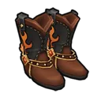

Esporas de Malfeitor
Calçados leves · Tier 12 · Nível 36
Qualquer um se sente um cowboy com essas esporas.
Atributos
Defesa
345
Vida
21
Economia
Valor
2.700.000
Tempo de fabricação
19h
XP do comerciante
210.000
Trabalhadores: Alfaiate 29, Mestre 25, Ferreiro 22
Receita


Marcos do projeto
6
Tempo de fabricação -20%
14
Valor +25%
26
-76 Couro
40
-17 Tecido
60
Chance de qualidade +1